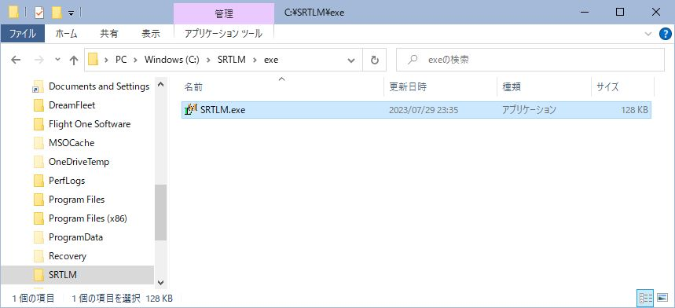
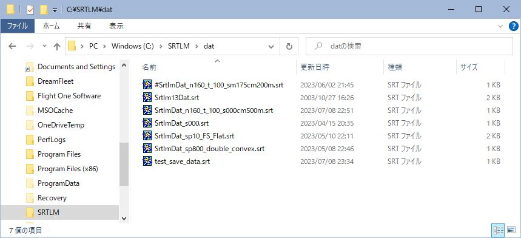

SRTLM レンズメーターシミュレーションツール
インストール
-
SRTLM_Jp.zipを解凍すると[SRTLM_jp]フォルダーが現れます。

-
SRTLMの起動
[SRTLM_Jp] - [exe] - SRTLM.exe を実行して下さい。

-
SRTLMの取り扱いについては SRTLM取り扱い説明書 をご覧下さい。
レンズメーターについてお知りになりたい方は レンズメーターについて をご一読下さい。
-
注意
[SRTM_Jp]フォルダーはどこに移動してもかまいません。 ただし、SRTLMはデータの保存、呼び出しで[dat]フォルダーを使用します。 [SRTM_Jp]フォルダーを移動しても[dat]フォルダーは削除しないで下さい。

アンインストール
-
[SRTLM_Jp]フォルダーを削除して下さい。以上です。
-
このシミュレーションツールでは、レジストリへの操作はありません。
謝辞
-
入江正和氏よりc++についていろいろと教えて頂きました。この場を借りて深くお礼申し上げます。
参考文献
-
D. P. Feder: "Tracing of Skew Rays", RP2113 Vol. 45, July 1950
-
片山 庸郎：幾何光学（日本眼鏡専門学校，1984）
-
草川 徹：レンズ光学（東海大学出版会，1989）P81-217
-
松居吉哉 他：幾何光学（共立出版，1979）P125-160
-
松居吉哉：レンズ設計法（共立出版，1973）
補足
SRTLM使用中に不具合、問題点などに気づかれた場合は、下記までお知らせ下さい。